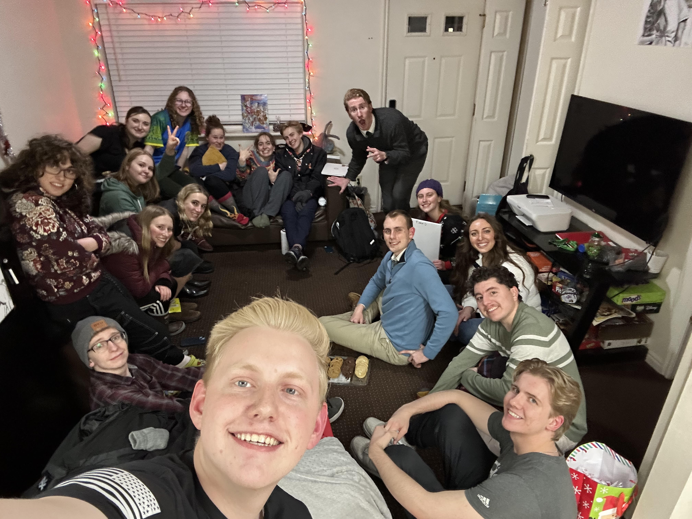
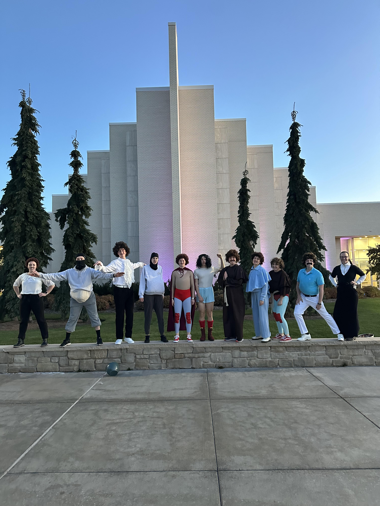

Welcome To The Council!

Founded in September 2024, The Council is a vibrant community at BYUI dedicated to fostering connections across diverse academic disciplines. Our mission is simple yet profound: to share knowledge, develop skills, and exchange witty banter. From offering advice to sharing meals, The Council stands ready to support every member of our college community, ensuring they not only survive but thrive during their university journey.
About Us!

The Council was founded in September 2024 in an effort to connect people from a wide variety of academic disciplines & to spread knowledge, skills, and sarcastic comments. The Council has since been called upon several times to support the people in their college community with advice and/or food.
Page Information!
The Council's website is your gateway to staying informed and engaged. Here, you'll find essential details about our weekly meetings, member profiles, and upcoming events. We believe in spreading joy and inspiration through daily quotes, practical college advice, and entertaining anecdotes, including our infamous "Goblet of Desire."